COSTRUTTORI
Ecco una breve descrizione dei team costruttori della Formula 1.

Macchine di Formula 1
Mercedes
- Storia:Il team ha fatto il suo primo debutto nella Formula 1 nel 1954.
- Titoli costruttori: 9 titoli mondiali.
- Titoli Piloti: 10 titoli mondiali.
- Piloti: Andrea Kimi Antonelli, George Russell.
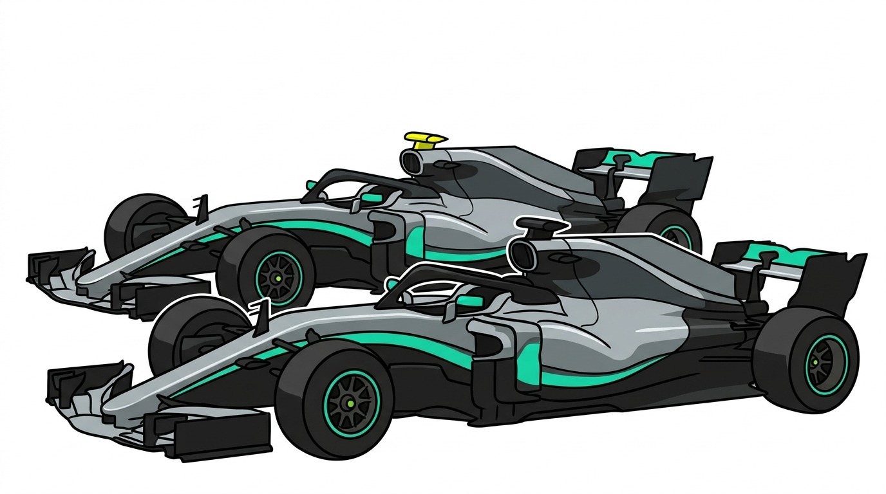
Mercedes F1 Cars
Ferrari
- Storia:Il team ha fatto il suo primo debutto nella Formula 1 nel 1950.
- Titoli costruttori: 16 titoli mondiali.
- Titoli Piloti: 15 titoli mondiali.
- Piloti: Charles Leclerc, Lewis Hamilton.
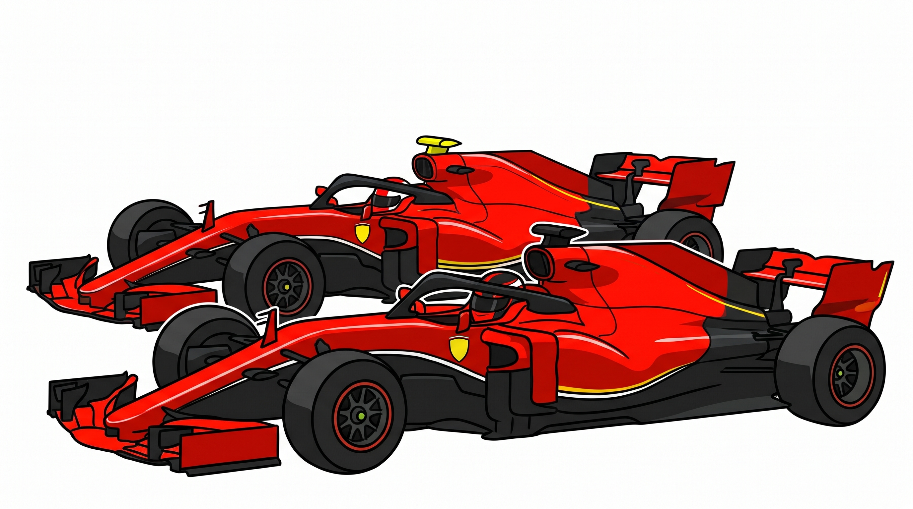
Ferrari F1 Cars
Red Bull
- Storia:Il team ha fatto il suo primo debutto nella Formula 1 nel 2005.
- Titoli costruttori: 6 titoli mondiali.
- Titoli Piloti: 7 titoli mondiali.
- Piloti: Max Verstappen, Isack Hadjar.
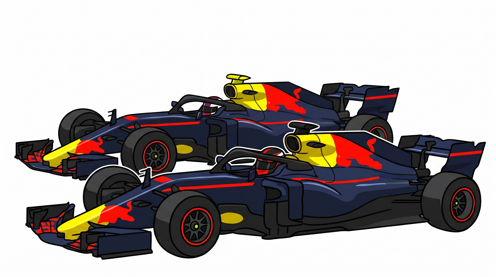
Red Bull F1 Cars
McLaren
- Storia:Il team ha fatto il suo primo debutto nella Formula 1 nel 1966.
- Titoli costruttori: 10 titoli mondiali.
- Titoli Piloti: 12 titoli mondiali.
- Piloti: Lando Norris, Oscar Piastri.
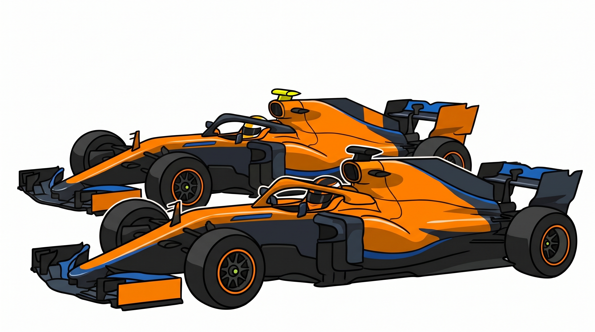
McLaren F1 Cars
Racing Bulls
- Storia:Il team ha fatto il suo primo debutto nella Formula 1 nel 2024.
- Titoli costruttori: 0 titoli mondiali.
- Titoli Piloti: 0 titoli mondiali.
- Piloti: Liam Lawson, Arvid Linblad.
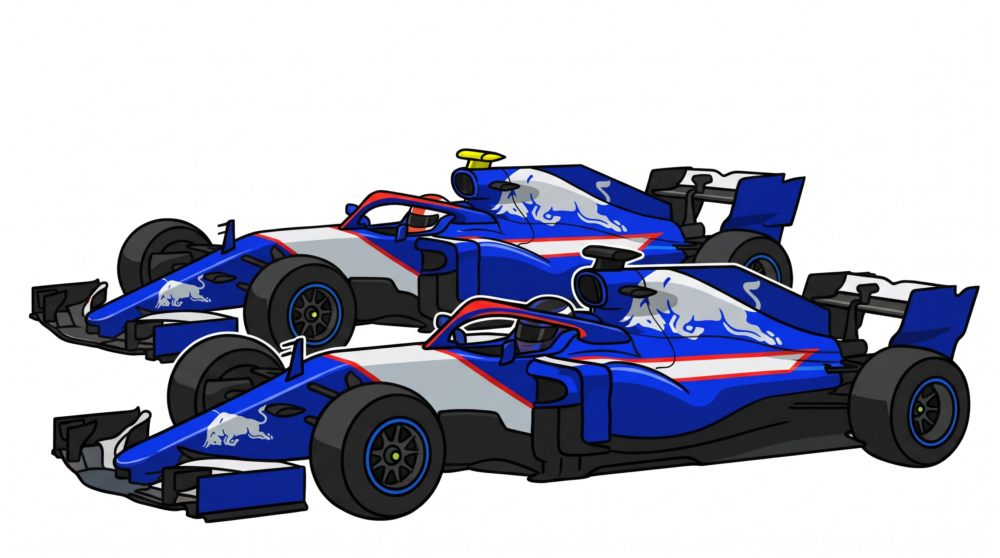
Racing Bulls F1 Cars
Alpine
- Storia:Il team ha fatto il suo primo debutto nella Formula 1 nel 2021.
- Titoli costruttori: 0 titoli mondiali.
- Titoli Piloti: 0 titoli mondiali.
- Piloti: Pierre Gasly, Franco Colapinto.
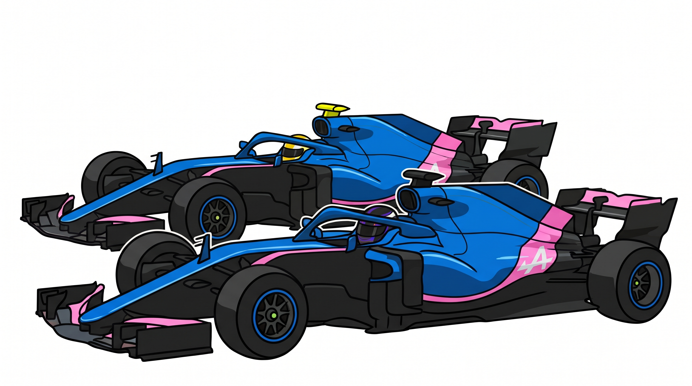
Alpine F1 Cars
Haas
- Storia:Il team ha fatto il suo primo debutto nella Formula 1 nel 2016.
- Titoli costruttori: 0 titoli mondiali.
- Titoli Piloti: 0 titoli mondiali.
- Piloti: Esteban Ocon, Oliver Bearman.
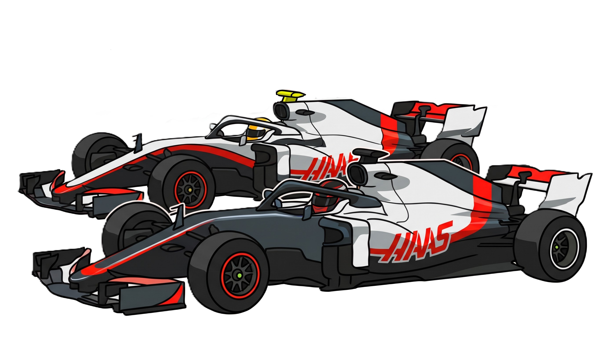
Haas F1 Cars
Audi
- Storia:Il team ha fatto il suo primo debutto nella Formula 1 nel 2026.
- Titoli costruttori: 0 titoli mondiali.
- Titoli Piloti: 0 titoli mondiali.
- Piloti: Nico Hülkenberg, Gabriel Bortoleto.
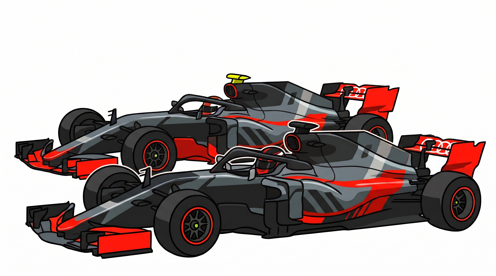
Audi F1 Cars
Williams
- Storia:Il team ha fatto il suo primo debutto nella Formula 1 nel 1975.
- Titoli costruttori: 9 titoli mondiali.
- Titoli Piloti: 7 titoli mondiali.
- Piloti: Alex Albon, Carlos Sainz.
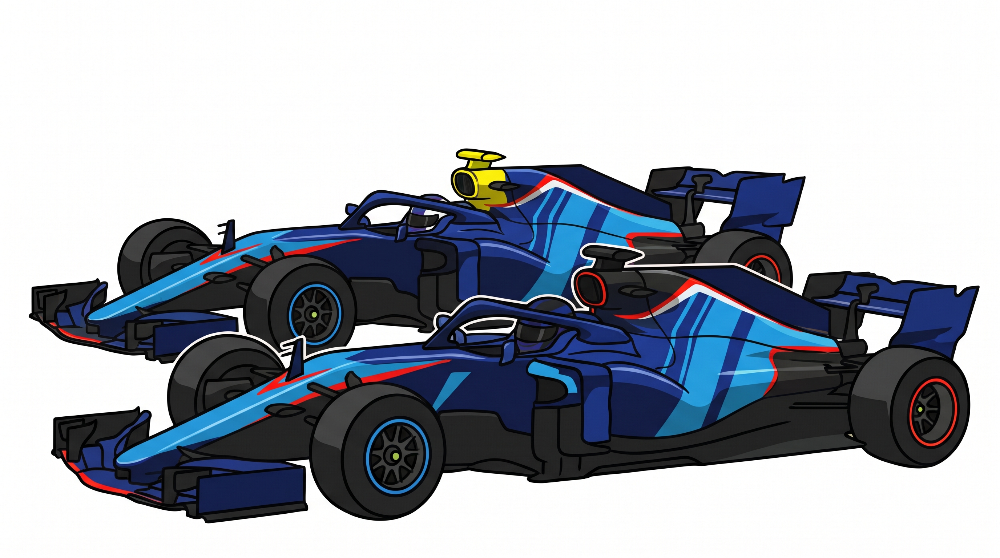
Williams F1 Cars
Aston Martin
- Storia:Il team ha fatto il suo primo debutto nella Formula 1 nel 1959.
- Titoli costruttori: 0 titoli mondiali.
- Titoli Piloti: 0 titoli mondiali.
- Piloti: Fernando Alonso, Lance Stroll.
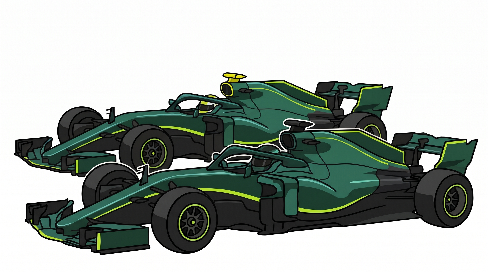
Aston Martin F1 Cars
Cadillac
- Storia:Il team ha fatto il suo primo debutto nella Formula 1 nel 2026.
- Titoli costruttori: 0 titoli mondiali.
- Titoli Piloti: 0 titoli mondiali.
- Piloti: Valterri Bottas, Sergio Perez.
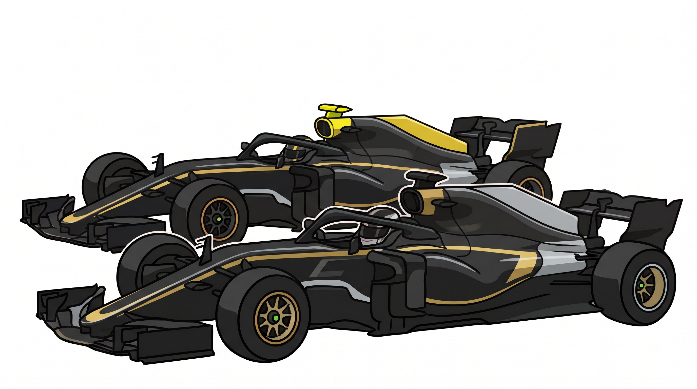
Cadillac F1 Cars